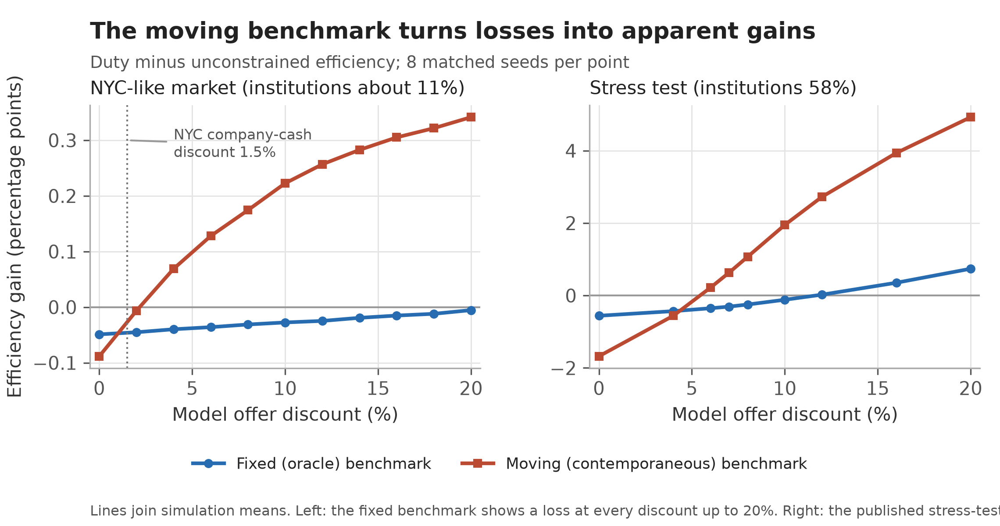

The question
When sellers prefer offers that are more likely to close, a cash buyer can win a home that a financed buyer values more. If a city wants to widen access for owner-occupiers, how would it tell which policy does that at the lowest cost?
The paper builds a simulated housing market and compares four instruments that change who wins: a cap on purchases per entity, a fair-share quota, a constant charge on institutional offers, and a duty that rises with local competition for a home.
Main findings
- 2.2% vs no crossingin the main proxy market, the moving efficiency ratio crosses zero near a 2.2% offer discount; the fixed comparison remains negative at every tested discount up to 20%
- 0.75–2.5×cohort access gains relative to full-run gains in the main-market target experiments; changing the population can also reorder the instruments
- 2rankings of the same instruments: calibrated to the same full-run access target, a constant charge keeps more value than the duty; calibrated to the same cohort target, the duty keeps slightly more
- 9.8% → 9.5%owner-occupiers who leave without buying at New York City proxy values, and with the cash discount removed: a comparison within the illustrative model


Why it matters
- Policies aimed at institutional or cash buyers are usually judged by an access number and an efficiency number. How each is measured can decide which policy looks best.
- An efficiency benchmark computed over the buyers still waiting moves with the policy itself. A two-period example in the paper shows why.
- Access measured over the whole run mixes cohorts. Following one cohort to purchase or exit gives larger effects and a different order.
What the results can tell us
The comparisons depend on an illustrative model. Two inputs use New York City records, but supply, arrivals, patience and valuations remain illustrative. Companies paying cash are a proxy for certain institutional buyers; the category includes LLCs used by individuals and does not measure closing certainty. The main comparisons hold offers fixed. Renters’ welfare and administrative costs are outside the model, so its rankings are conditional results. The earlier benchmark-audit note develops the diagnostic in housing and service-queue examples. Its content is incorporated in this paper; its PDF and audit files remain available together below.
Benchmark note and audit files
Auditing policy dependent benchmarks in allocation simulations is the earlier note incorporated into this paper. Its current archive, release 1.0.3, includes the PolicySpace2 instrumentation patch, analysis script and per-seed results. The PDF is unchanged at version 1.0.2; release 1.0.3 added the audit files.
Cite this paper
BibTeX citation
@misc{loschi2026wedge,
author = {Loschi, Pablo},
title = {When the Benchmark Moves with the Policy: Measuring
Housing-Access Instruments in Allocation Simulations},
year = {2026},
howpublished = {Working paper and replication package, Zenodo},
doi = {10.5281/zenodo.23671615}
}